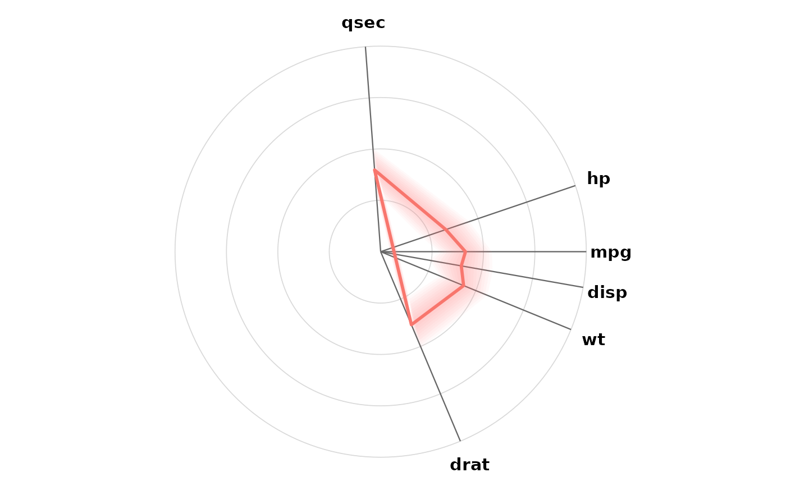
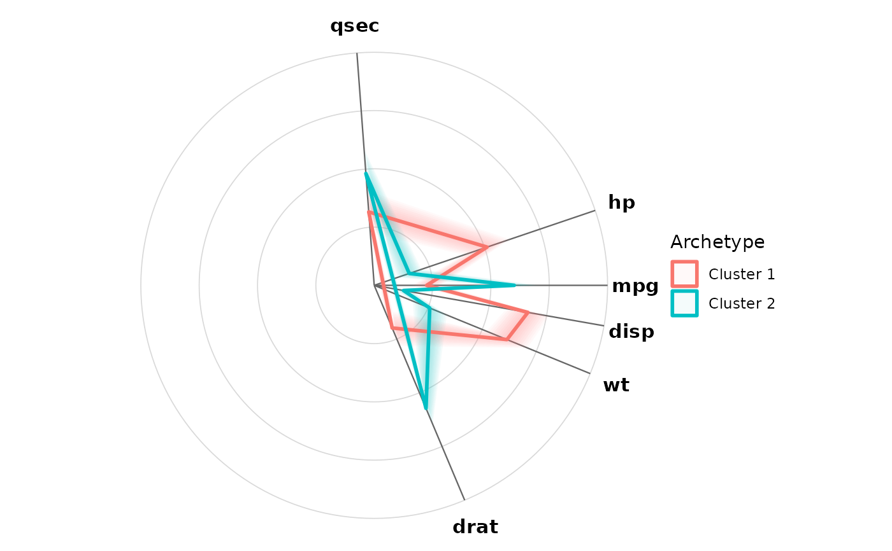
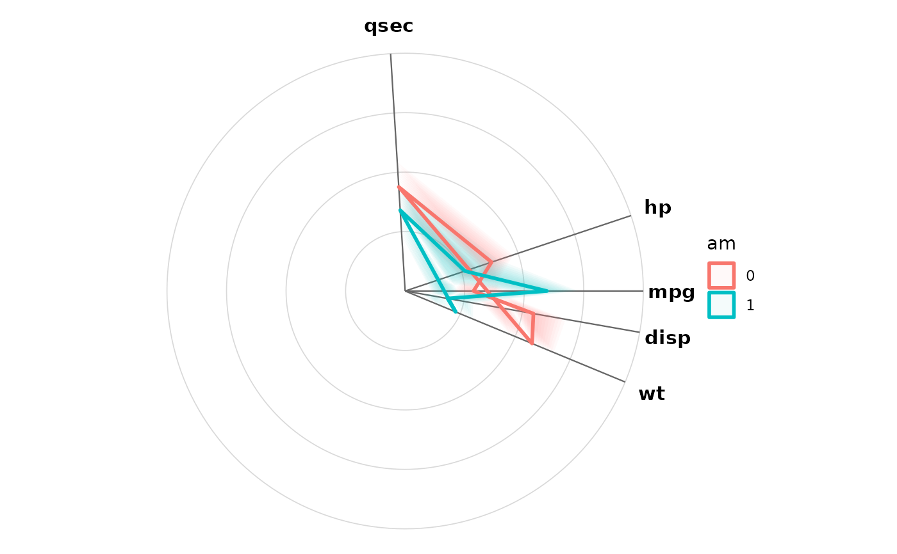

Co-radar plot: radar plot with correlation-based axes
coradar.RdBuilds a co-radar plot object: a radar (spider) plot whose axis
angles are determined by the correlation structure of the data (see
coradar_pos), rather than arbitrary equidistant ordering.
Variables are normalized to a common scale, and one or more group
"archetypes" (mean shapes with a variability band) are summarized for
display via plot().
Usage
coradar(
data,
vars = NULL,
groups = NULL,
normalize = c("minmax", "rank", "none"),
cor_matrix = NULL,
min_degrees = 10,
max_iterations = 500
)Arguments
- data
a data.frame
- vars
variables to display as axes (default: all numeric columns). Ordinal variables can be included by coding them as numeric first.
- groups
controls archetype grouping. One of:
NULLa single overall archetype (default)
- a column name
group by that column of
data(the column is excluded from the axes)- a single number
k k-means clustering with
kclusters on the normalized variables (set a seed first for reproducibility)- a vector with one value per row
pre-computed group assignments
- normalize
how to scale each variable to the common radial axis:
"minmax"(default; observed range maps to[0, 1]),"rank"(rank-transform, robust to skew), or"none"(data must already share a comparable non-negative scale)- cor_matrix
optional correlation/association matrix (or
visx_corobject) used for axis placement; defaults to Spearman correlation ofvars- min_degrees
minimum angular separation between axes, in degrees
- max_iterations
annealing iterations for the axis layout
Value
A visx_coradar object (S3 class) containing:
- positions
named vector of axis angles in radians
- stats
data.frame of archetype summaries (group, variable, mean, sd, pos)
- data
the complete-case data for
vars- data_scaled
the normalized data
- groups
factor of group assignments (or NULL)
- group_source
how groups were formed: "overall", "column", "assignment", or "kmeans"
- cor_matrix
the matrix used for axis placement
Examples
result <- coradar(mtcars, vars = c("mpg", "disp", "hp", "drat", "wt", "qsec"))
result
#> Co-radar plot of 6 variables, 32 observations
#> Normalization: minmax
#>
#> Axis positions (degrees):
#> mpg hp qsec drat wt disp
#> 0 19 94 293 338 350
plot(result)

# two k-means archetypes
set.seed(1)
plot(coradar(mtcars, vars = c("mpg", "disp", "hp", "drat", "wt", "qsec"),
groups = 2))

# group by an existing column
plot(coradar(mtcars, vars = c("mpg", "disp", "hp", "wt", "qsec"),
groups = "am"))
